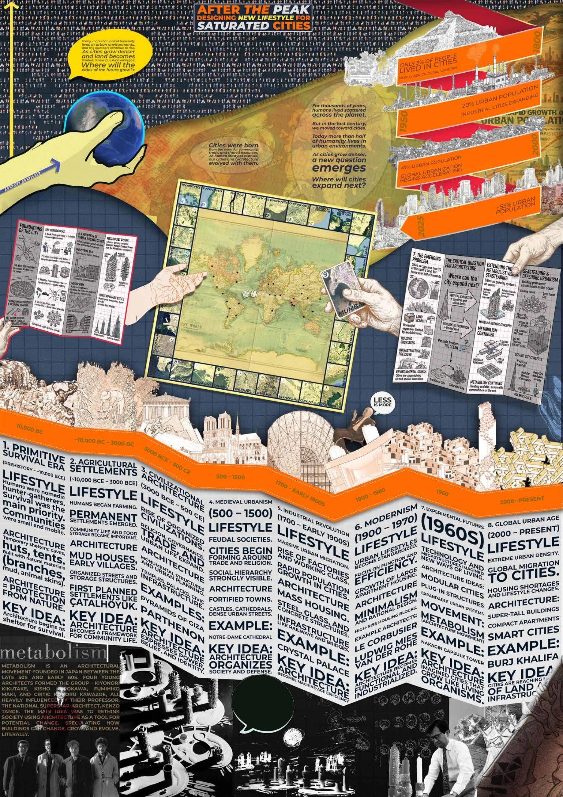
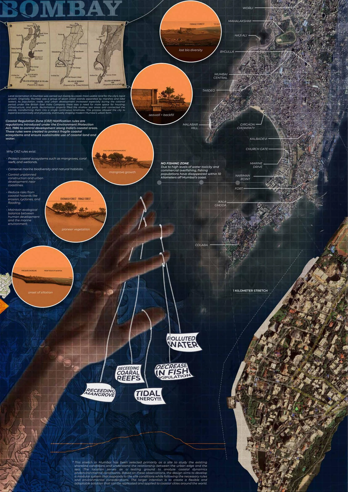
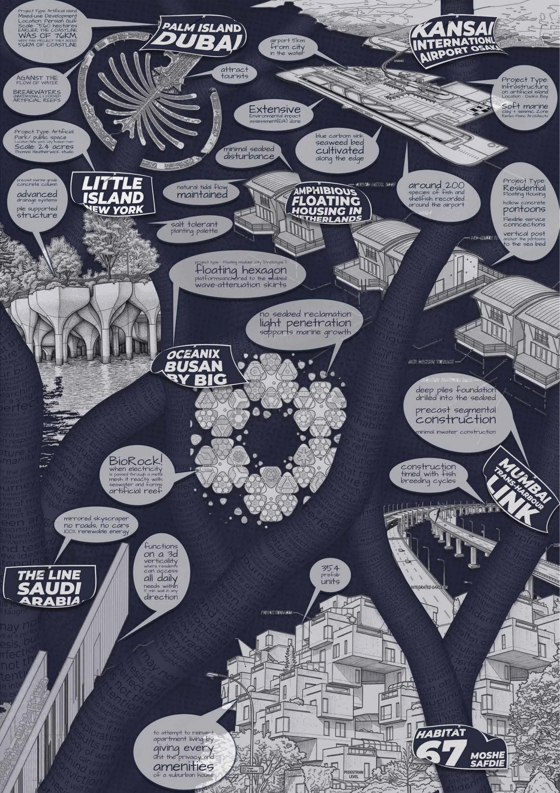
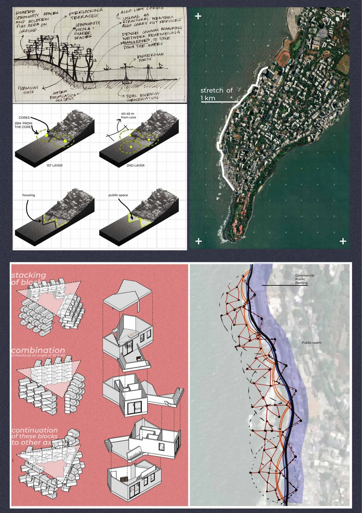
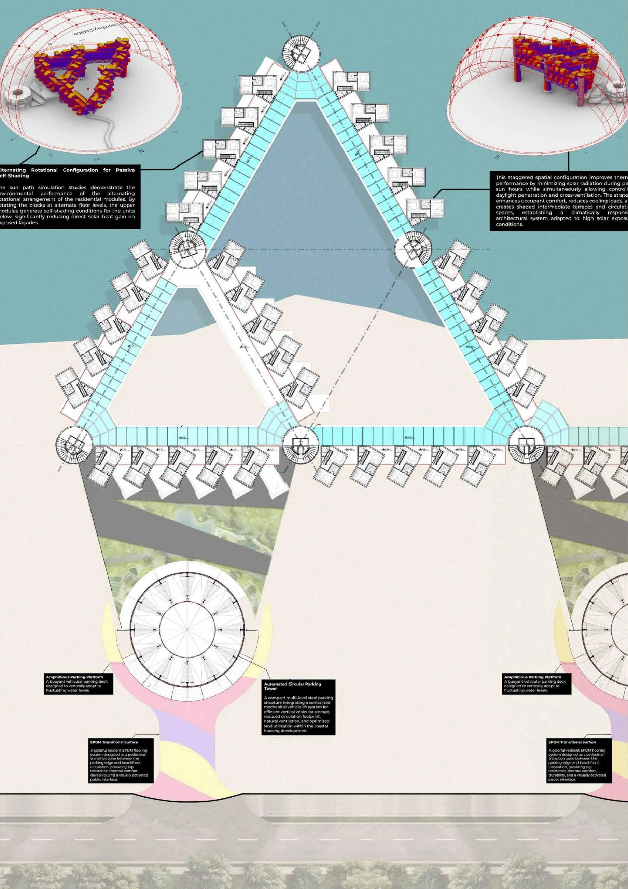
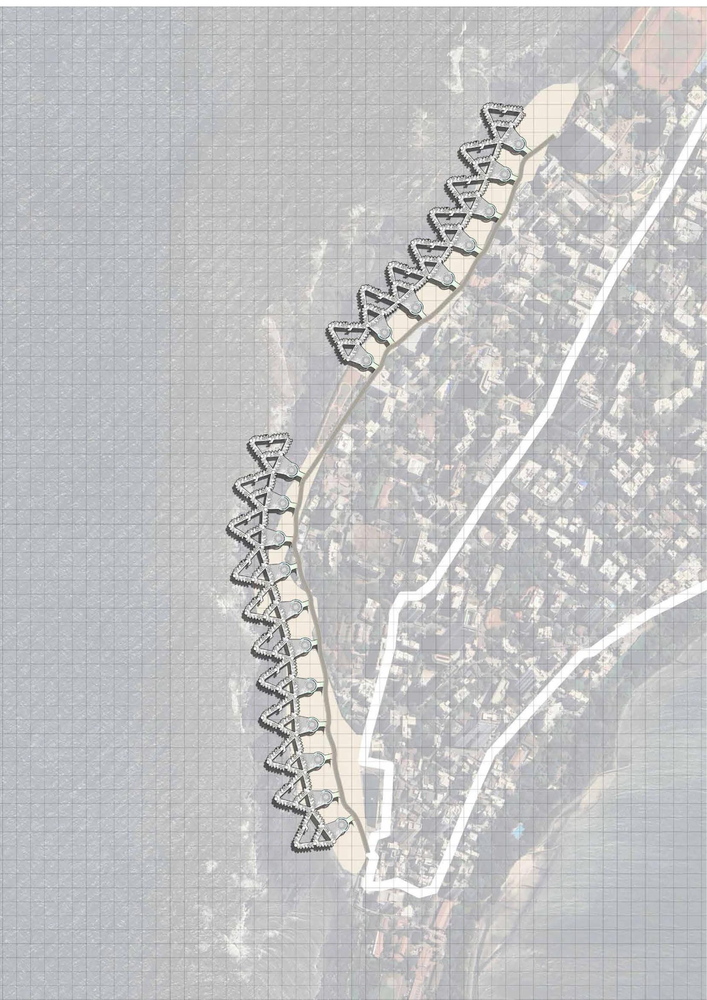
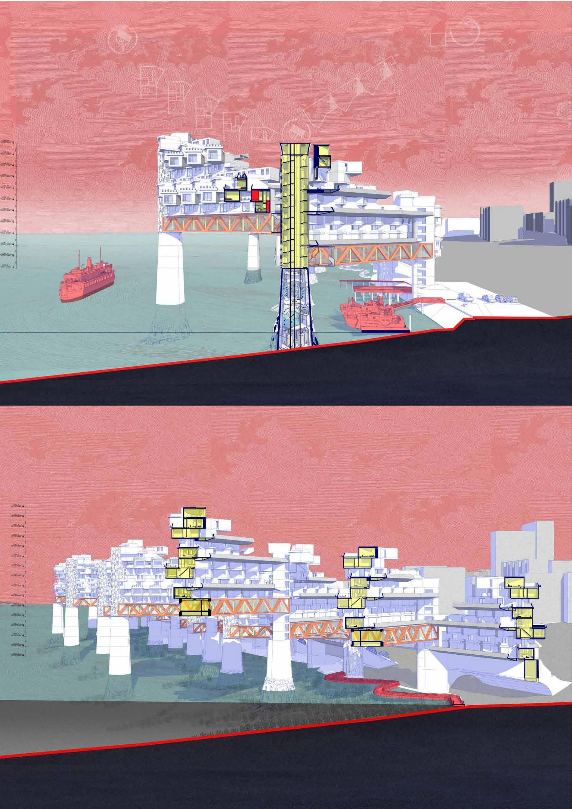
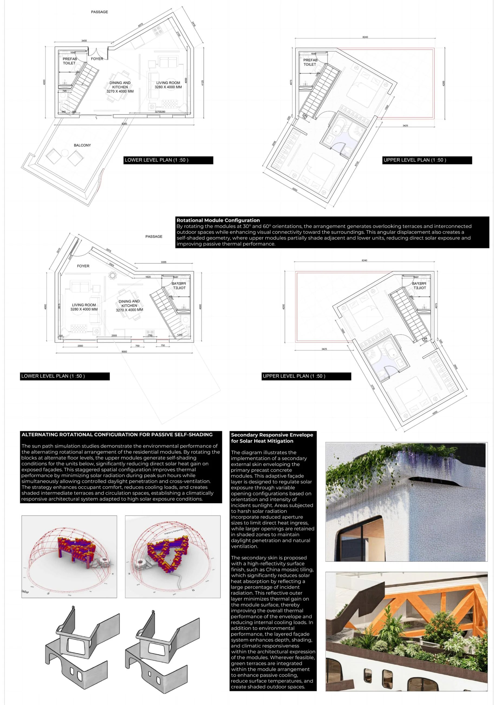
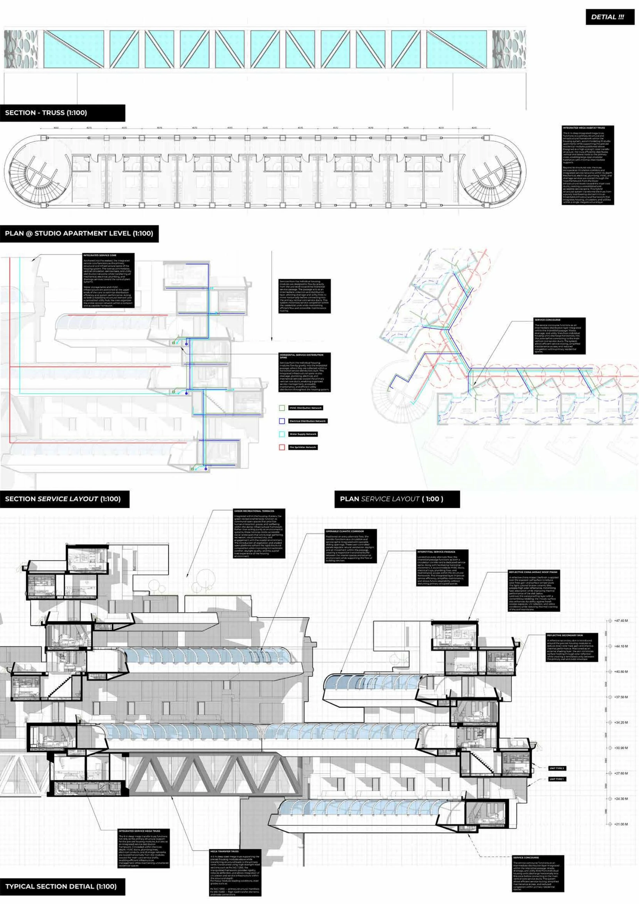
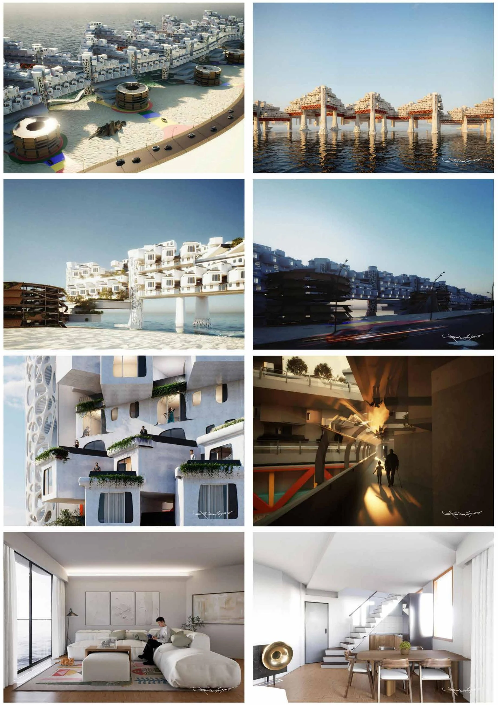

Architecture Thesis · Tejas Ajit Jamdar
After the Peak
Designing a new lifestyle for saturated cities.
After the Peak is an architecture thesis by Tejas Ajit Jamdar, developed around the question of how saturated cities might accommodate a new way of living. The project’s guiding theme is “Designing a new lifestyle for saturated cities.”
The ten original presentation sheets below bring the thesis together in one place. Read the design narrative alongside the visual work, then explore the project model in the interactive portfolio. This is an academic design proposal.
Save After the Peak on Pinterest ↗
Project presentation









